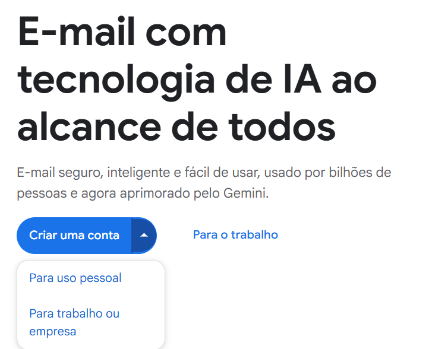
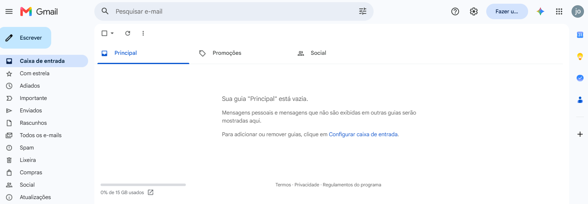

Criar uma conta de e-mail é um dos primeiros passos para utilizar diversos serviços da internet. Com um endereço de e-mail, é possível enviar e receber mensagens, criar contas em sites e aplicativos, receber documentos e acessar diferentes serviços digitais.
O Gmail é um serviço de e-mail oferecido pelo Google. Neste tutorial, você aprenderá como criar uma conta de forma simples e segura.
1. Acesse o Gmail
Para começar, abra um navegador de internet, como Google Chrome, Microsoft Edge ou Mozilla Firefox.
Na barra de endereço, digite gmail.com e pressione a tecla Enter.
Na página do Gmail, procure pela opção "Criar conta" e clique nela.
Dica: sempre confira se você está acessando o site oficial antes de informar seus dados.

2. Escolha o tipo de conta
Depois de clicar em "Criar conta", o Google apresentará algumas opções.
Para uma conta de uso pessoal, escolha a opção "Para uso pessoal".
Essa opção é indicada para quem deseja utilizar o e-mail para comunicação, estudos, cadastros em sites e outras atividades do dia a dia.
3. Informe seu nome
Na próxima tela, será necessário informar seu nome e sobrenome.
Preencha as informações solicitadas e clique em "Avançar".
É importante preencher os dados corretamente, principalmente se a conta for utilizada para estudos, trabalho ou comunicação com outras pessoas.
4. Informe sua data de nascimento
O Google poderá solicitar algumas informações pessoais, como data de nascimento e gênero.
Preencha os campos solicitados e avance para a próxima etapa.
5. Escolha seu endereço de e-mail

Agora você deverá escolher o endereço que será utilizado para enviar e receber mensagens.
Por exemplo:
joao.silva@gmail.com
O endereço precisa ser exclusivo. Caso o nome escolhido já esteja sendo utilizado por outra pessoa, o Google apresentará outras opções.
Para uso profissional ou escolar, é recomendado escolher um endereço simples e fácil de lembrar, de preferência utilizando seu nome.
6. Crie uma senha
Depois de escolher seu endereço, será necessário criar uma senha para proteger sua conta.
Procure criar uma senha difícil de descobrir, utilizando uma combinação de letras, números e outros caracteres.
Evite utilizar informações óbvias, como seu nome, data de nascimento ou sequências simples de números.
Importante: nunca compartilhe sua senha com outras pessoas.
7. Adicione um número de telefone
Durante a criação da conta, o Google poderá solicitar um número de telefone para ajudar na verificação e recuperação da conta.
Caso essa etapa seja apresentada, siga as instruções mostradas na tela.
O número poderá ajudar na recuperação da conta caso você esqueça sua senha ou tenha problemas para acessar o e-mail.
8. Leia e aceite os termos
Antes de finalizar a criação da conta, serão apresentadas informações sobre os termos e a privacidade do serviço.
Leia as informações apresentadas e, se estiver de acordo, siga as instruções para concluir o cadastro.
Depois disso, sua conta estará criada.
9. Acesse sua caixa de entrada
Após concluir o cadastro, você poderá acessar sua caixa de entrada.
É nessa área que você encontrará os e-mails recebidos.
Também será possível criar e enviar novas mensagens clicando no botão "Escrever".
A partir daí, você poderá utilizar seu novo endereço de e-mail para comunicação, estudos, trabalho e cadastro em serviços digitais.

Cuidados importantes com sua conta
Depois de criar seu e-mail, é importante tomar alguns cuidados para manter sua conta protegida.
- Nunca compartilhe sua senha.
- Não informe sua senha em sites desconhecidos.
- Desconfie de mensagens que pedem seus dados pessoais.
- Evite clicar em links suspeitos recebidos por e-mail.
- Mantenha seus dados de recuperação atualizados.
- Verifique o endereço do site antes de informar seus dados.
Conclusão
Criar uma conta de e-mail é um processo simples e útil para quem está começando a utilizar a internet. O Gmail pode ser utilizado para comunicação, estudos, trabalho, cadastro em serviços e diversas outras atividades.
Ao aprender a criar e utilizar seu próprio e-mail, você dá um passo importante para conquistar mais autonomia no uso das ferramentas digitais.